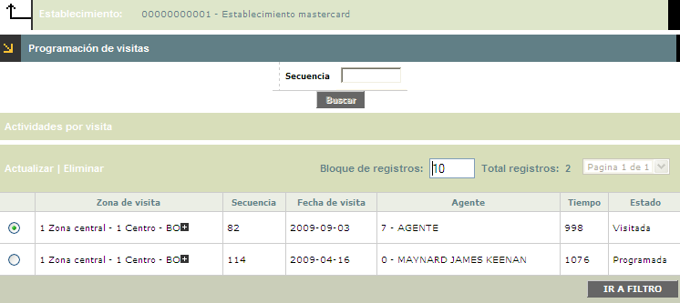
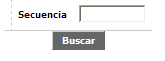
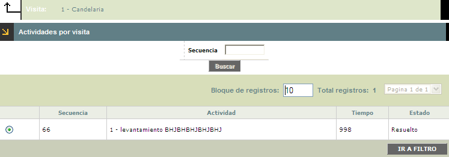

|
Programación de visitas a establecimientos |
Programación de visitas: Esta agrupación de campos muestra, las visitas programadas para una zona en particular, teniendo en cuenta la información asociada a esta y los agentes encargados de realizar la actividad.
El formulario contiene las opciones Actualizar y Eliminar. Adicionalmente, cuenta con un filtro de búsqueda, vinculo Actividades por visita y botón para retroceder.

Filtro: Se pueden realizar consultas a través de las siguientes opciones:

|
Secuencia |
Campo alfanumérico de 8 dígitos, que indica el número de secuencia que el sistema le asignó a cada visita al momento de ejecutar la programación de la misma. |
Actualizar: Si el usuario invoca la opción Actualizar se despliega un nuevo formulario en el cual el único campo modificable es: Fecha de visita.

Descripción de campos
|
Fecha de visita |
Este campo en formato YYYY-MM-DD muestra la fecha para la cual el sistema programó la visita al establecimiento. |
Actividades por visita: Una vez marcados los registros de las visitas programadas; en esta agrupación de campos se indican las actividades a realizar. Esta opción cuenta con un filtro de búsqueda y con un boton para retroceder.

Filtro: Se pueden realizar consultas a través de las siguientes opciones:
|
Secuencia |
Campo alfanumérico , que indica el número de secuencia que el sistema le asignó a cada visita al momento de ejecutar la programación de la misma. |
|
Actividad |
En este campo alfanumérico, se visualiza la actividad programada para la visita que se va a ejecutar. |
|
Tiempo |
Campo en el cual se indica la duración de la visita según la actividad que se pretende realizar. |
|
Estado |
En este campo se indica el estado de la actividad, según el desarrollo o culminación de la misma. |